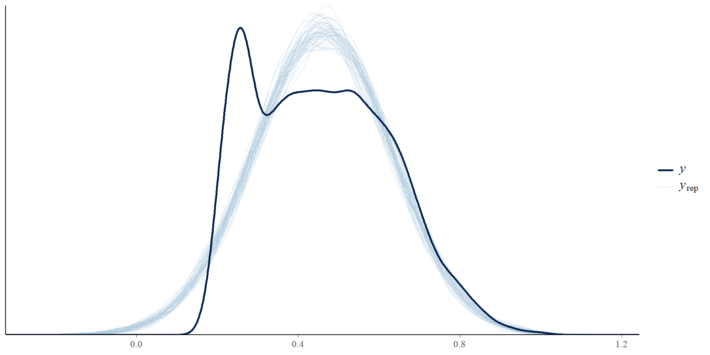

Song popularity contains a large number of exact zeros, likely reflecting missing data rather than true popularity scores. These observations were excluded prior to analysis.
The processed dataset contains 4214 rows and 31 features.
4. Analysis
Question 1: What song features most strongly predict song popularity?
Question Introduction
To investigate which song characteristics predict popularity, we fit a Bayesian multiple linear regression model. Song popularity (song.hottness) which ranges from 0 to 1, and a higher value indicates more popular songs. The predictors considered are:
song tempo (in beats per minute)
song duration (seconds)
song loudness (general loudness )
We use Bayesian linear regression to estimate how these features are associated with popularity.
Exploratory Data Analysis
Before fitting the model, we examined the relationships between the predictors and popularity.
Rhat close to 1 (< 1.01) which indicates convergence
N-eff ratio > 0.1 which indicates efficient sampling
Posterior Summary
term
estimate
std.error
conf.low
conf.high
(Intercept)
0.503
0.013
0.482
0.524
song.tempo
0.000
0.000
0.000
0.000
song.duration
0.000
0.000
0.000
0.000
song.loudness
0.007
0.001
0.006
0.008
Intercept (0.503): Baseline popularity when predictors are zero.
Tempo & Duration: Effects ~0; no meaningful impact on popularity.
Loudness: Small positive effect, credible interval excludes zero → slight influence.
Posterior Predictive Check
Most simulated distributions follow the observed data. There’s a slight difference at lower popularity values (0.1-0.2). Model fits reasonably well overall, but may not fully capture the extremes of very low popularity.

Interpretation
Tempo, duration, and loudness have limited predictive power for song popularity on their own.
Credible intervals for all three predictors overlap zero
Large residual variance \(\sigma\) suggests other factors dominate
Likely missing variables: artist popularity, familiarity, location
Future work: incorporate artist-level features to better explain popularity
Question 2: Has the relationship between song loudness and popularity changed over time?
Question 3: How much of song popularity comes from artist effects?